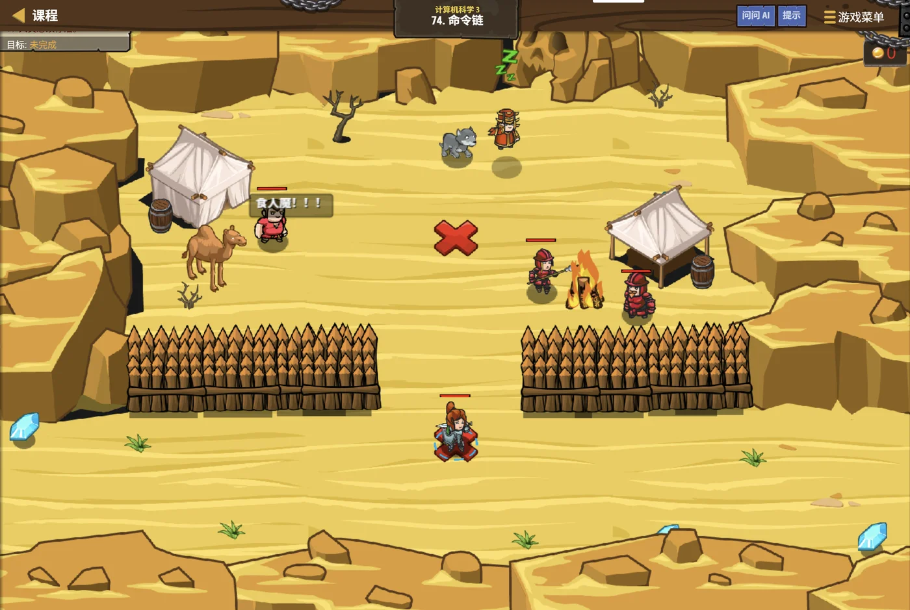
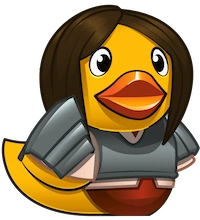
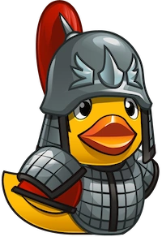

绿洲岩壁上有一道螺旋通道 。回声沿着螺旋一圈圈向里传，每到一圈就轻一点，却始终是同一个声音的形状。 每一圈里，都套着一模一样的、更小的一圈？ 这就是递归：一个大问题里，藏着一个同样形状的小问题。
塞尼克 · 沙海向导
上一课我们学了"用二分砍一半"。
这一课学另一种拆法：
把一个问题和它的"缩小版"联系起来，让函数自己调用自己。
它看着有点绕，但一旦想通，很多题会突然变得特别短。
assets/illustrations/py-L5-06-01_echo_spiral.webp
【配图位】绿洲岩壁上的螺旋通道俯视剖面：一圈圈同心弧由外向内收拢，形状完全相同、只是逐层变小；音波沿着弧线层层回旋并向内传递，越往内纹路越细；螺旋最中心处有一盏小灯，光晕恰好与最内圈重合；一名披沙色斗篷的向导把手掌贴在入口的岩壁上。
图 1：星砂绿洲的回音螺旋——今天要从这里开始
0.1 学习目标
1 学完这个单元，你将能……
说清"递归"两个字的含义
写出递归的两个必备要素（出口与缩小）
跟着调用过程一步步推出结果
判断一段递归代码会不会"停不下来"
把简单的递归改写成循环
用递归解决阶乘、斐波那契、汉诺塔
2 对标 GESP 考纲（Python 五级）
理解递归的思想与适用条件
掌握递归的出口与递推关系
理解递归调用的执行过程（调用栈）
了解递归与循环的对应关系
考核目标：能跟踪递归调用并算出结果
0.2 考纲对照
本单元小节 对应考纲条目 真题常考形式
1 什么是递归 递归的概念 递归和自己调用自己的含义 2 递归的两个要素 出口与缩小 少了出口会怎样（必考） 3 递归的执行过程 调用栈 写出每一层的调用、算出返回值 4 递归与循环 两种写法的取舍 递归的空间代价、栈溢出 5 经典递归 递归的应用 阶乘、斐波那契、汉诺塔
1.1 函数可以调用自己
递归的定义，一句话就够：
一个函数在执行的过程中，又调用了它自己 。 听起来有点"自我循环"的意思，好像会有问题——但只要加一个"什么时候停"的条件，
它就是完全合法的写法。 它的思想是：把一个大问题，转化成一个"同样形状、但更小"的问题。
先看一个"停不下来"的错误例子
Python
def f():
print("我在调用自己")
f() # ★ 又调用自己，而且没有任何"停"的条件
# 结果：一行一行地打印，永远停不下来
# 直到内存被耗尽 → 程序崩溃（这叫"栈溢出"）
问题在哪
它会无限地"往下钻"，永远没有回头的那一天
1.2 一个最简单的例子
倒计时：从 n 数到 1
Python
def countdown(n):
if n == 0: # ★ 出口：到了 0 就停
return
print(n, end=" ")
countdown(n - 1) # ★ 缩小：把问题变小一号，再交给"自己"
countdown(5) # 输出：5 4 3 2 1
OUTPUT 5 4 3 2 1看这两行
① if (n == 0) return; 是出口 ；countdown(n - 1) 是缩小 ——把"从 5 数到 1"变成"从 4 数到 1"
打个比方：
递归就像传话游戏 ——我告诉你一件事，让你把几乎一样的事再告诉下一个人。 但必须有人说一句"到我为止，不用再传了"——
否则传话会一直传到天边去，这就是"出口"的作用。 而每一轮传的话都比上一轮少一点、小一点，这就是"缩小"。
2.1 出口：什么时候停
要素一：出口（终止条件）。
必须有一句判断，在"问题已经小到不用再拆"的时候，直接给出答案、不再递归 。 最常见的就是这两种： ① 数值到了边界 ：if (n == 0) return 1;、
if (n <= 1) return n;；② 指针走到了尽头 ：if (p == nullptr) return;。没有出口的递归，一定会在某一刻"栈溢出"崩溃。
出口写错会怎样
Python
# ✘ 错误一：没有出口
def f(n):
return n + f(n - 1)
# ✘ 错误二：出口永远到不了（方向反了）
def g(n):
if n == 0:
return 0 # 想让 n 减到 0
return n + g(n + 1) # 可这里每次都 +1，越走越远
# ✔ 正确：出口能到达，而且每次都在靠近它
def h(n):
if n == 0:
return 0 # 出口
return n + h(n - 1) # 每次 n 减 1，一定会到 0
判断口诀
"出口写了没有？每一次递归，是不是真的在往出口靠近？" ——两个都要答"是"
2.2 缩小：每次往哪儿走
要素二：缩小规模。
每一次递归调用，都要把问题变得比原来小一点 ——
而且这个"变小"要能有限步之内到达出口 。 常见的缩小方式： n − 1n / 2n % 10p->next写递归时先把这两句话写出来，代码就成型了。
递归的通用模板
Python
def f(参数):
if 到了最小的情况: # ① 出口
return 直接能算出的答案
# ② 把大问题拆成"更小的同一个问题"
return 用 f(更小的参数) 算出的结果
两步走
先处理"小到不用再拆"的情况，再把大问题交给"缩小版"的自己
递归的两个要素：一个负责"停"，一个负责"走"
要素一：出口
什么时候不用再往下拆了？
if (n == 0) return 1;
没有它 → 无限递归 → 栈溢出崩溃
★ 写递归，先把出口想清楚
要素二：缩小规模
每一层要比上一层"小"
return n * f(n - 1);
而且要能有限步走到出口
★ 方向不能反（该减却写成了加）
图 2（SVG）：出口负责"停"，缩小负责"走"
3.1 一层层往下钻
跟踪 f(n) = n + f(n-1)，算 f(4)
Python
def f(n):
if n == 1:
return 1 # 出口
return n + f(n - 1) # 缩小
【往下钻】（每调用一次，就压一层"栈"）
f(4) 需要 4 + f(3) ← 卡住，等 f(3)
f(3) 需要 3 + f(2) ← 卡住，等 f(2)
f(2) 需要 2 + f(1) ← 卡住，等 f(1)
f(1) → 命中出口，直接返回 1 ✔
【往回弹】（拿到下层的结果，才能算出自己）
f(2) = 2 + 1 = 3
f(3) = 3 + 3 = 6
f(4) = 4 + 6 = 10
答案：f(4) = 10
注意顺序
先是"一路往下钻"到出口，然后才是"一层层往回弹"算出结果 4 + 3 + 2 + 1 = 10 ——这其实就是从 1 加到 4 的和
3.2 再一层层往回弹
为什么"往下钻"的时候算不出结果？
因为 f(4) 要算 4 + f(3)，
可它不知道 f(3) 是多少——只能先停下来，去问 f(3)。 f(3) 又不知道 f(2)，于是再往下问……一直问到 f(1)——
这时候"出口"直接给出了答案，不需要再问了。 于是信息的流向掉了个头：答案从最底层一层层往上"弹"回来，
每一层拿到下一层的值，再加上自己的那一部分。 这个过程，就像回声从螺旋最里面一层层传回来。
调用栈：往下钻时一层层压入，往回弹时一层层弹出
f(4) → 4 + f(3)
f(3) → 3 + f(2)
f(2) → 2 + f(1)
f(1) → 1 ★出口
往回弹
拿到下层结果才能算
结果是这样算出来的
f(1) = 1
f(2) = 2 + 1 = 3
f(3) = 3 + 3 = 6
f(4) = 4 + 6 = 10
★ 一共压了 4 层栈，所以空间是 O(n)
★ 每调用一次就"压一层栈"，所以递归的层数不能太深——太深会栈溢出（通常几千到几万层）
★ 跟踪递归时，最稳的办法是像这样把每一层的"待算式"和"结果"都列出来
图 3（SVG）：递归的执行——先往下钻，再往回弹
assets/illustrations/py-L5-06-02_stack_frames.webp
【配图位】螺旋峡谷内一摞自下而上叠起的发光石台，每层石台比下一层小一圈，台面都刻着同一句未算完的算式（前几层的数字互不相同）；一名披沙色斗篷的向导正把最新一层石台放到最顶上，而最底下那层石台已刻满数字并亮起绿光（表示出口已命中）。
图 4：一层层叠起来的石台——这就是"调用栈"
4.1 能互相改写
同一个"从 1 加到 n"，两种写法
Python
# 【递归写法】
def sum1(n):
if n == 0:
return 0
return n + sum1(n - 1)
# 【循环写法】—— 结果完全一样
def sum2(n):
s = 0
for i in range(1, n + 1):
s += i
return s
# 【更聪明的循环】直接用等差数列公式
def sum3(n):
return n * (n + 1) // 2
三种写法结果相同
但递归版每层都要压栈，循环版不用 ——所以能用循环就别用递归
"能改成循环的，就改成循环。"
这不是口味问题，是有实际原因的： ① 递归每调一层就占一点栈空间 ，层数多了会栈溢出；② 递归有"函数调用"的额外开销 ，同样一件事，循环通常更快 ；③ 但有些问题用递归写就是要短得多、也更好懂 ——
比如汉诺塔、树的遍历、快速排序。 所以原则是：好写又好跑就用循环；结构天然"层层嵌套"的，用递归。
4.2 递归的代价：调用栈
递归 循环
代码长度 通常更短 往往更长 可读性 结构嵌套的问题上更好懂 层层依赖的问题上更难懂 空间开销 每层占栈空间，O(深度) 通常 O(1) 运行速度 有函数调用开销，稍慢 通常更快 最大风险 层数太深 → 栈溢出崩溃 几乎没有
"栈溢出"是怎么发生的？
每次函数调用，系统都要在"调用栈"上记一笔：参数是什么、返回后该回到哪一行。 而调用栈的大小是有限的（通常几 MB）。 递归层数太多（比如十万层），这一笔笔记不下，就会"栈溢出"——
程序直接崩溃，报一句类似 stack overflow 的错。 所以：n 很大（比如 10⁶）的时候，别用递归，改用循环或递推。
5.1 阶乘与斐波那契
阶乘：n! = n × (n−1)!
Python
def fact(n):
if n <= 1:
return 1 # 出口：0! = 1! = 1
return n * fact(n - 1) # 缩小：n! = n × (n−1)!
# fact(4) = 4 × 3 × 2 × 1 = 24
fact(4) = 24
和上一课的"递推"是同一个数学关系，只是实现方式不同
斐波那契：这就是"慢递归"的典型例子
Python
def fib(n):
if n <= 1:
return n # 出口：fib(0)=0, fib(1)=1
return fib(n - 1) + fib(n - 2) # 一次要调两个自己
# 看着很优雅，但非常慢！
# fib(5) 会算 fib(4) + fib(3)
# fib(4) 又算 fib(3) + fib(2) ← fib(3) 被重复算了
# fib(3) 被算了 2 次、fib(2) 被算了 3 次 ……
# 越往下重复得越离谱，总次数是"指数级"的
问题
同一个子问题被反复计算 ——
fib(40) 的调用次数是十亿量级，递归版根本跑不完 而用递推（循环）算 fib(40)，只要 40 次
斐波那契递归：时间复杂度 O(2ⁿ)，空间复杂度 O(n)。
这两个数字不一样，很容易被考到。 ① 时间是指数级的 ——因为同一项被重复计算了指数多次；② 空间是 O(n) ——因为递归不会同时展开所有分支 ，
它是一条路走到底再回头的，栈的最大深度只有 n 层 。所以"时间复杂度和空间复杂度都是 O(n)"这个说法是错的——
空间是 O(n)，但时间是 O(2ⁿ)。 记忆：空间看"最深的层数"，时间看"一共算了多少次"。
5.2 汉诺塔
汉诺塔：递归的"招牌菜"
Python
# 把 n 个盘从 a 借助 b 移到 c
def hanoi(n, a, b, c):
if n == 1: # 出口：只剩一个盘，直接搬
print(a, " -> ", c)
return
hanoi(n - 1, a, c, b) # ① 把上面 n-1 个挪到 b
print(a, " -> ", c) # ② 把最大的那个搬到 c
hanoi(n - 1, b, a, c) # ③ 再把 n-1 个从 b 挪到 c
三句话就把规则说完了
① 先把上面一摞挪开；② 搬最大的那个；③ 再把那一摞挪过来移动次数 2ⁿ − 1（n = 3 时是 7 次）
为什么汉诺塔用递归写这么短？
因为这个问题本身就是"层层嵌套"的形状 ：要搬 n 个盘，先得搬 n−1 个；要搬 n−1 个，先得搬 n−2 个…… 每一层的做法一模一样，只是盘子少一个——
这正是递归最擅长的事情。 你要是想用循环写，得自己模拟一堆状态，代码会又长又难懂。 所以：结构天然是"层层套娃"的问题，交给递归。
assets/illustrations/py-L5-06-03_base_case_door.webp
【配图位】螺旋通道的最内圈特写：一扇小小的石门嵌在弧壁尽头，门缝里透出温暖的灯光，门楣上刻着一个最小的数字（像"1"），标示"到此为止"；门前的回声纹路已经收拢到最小、不再继续向内传递；一名披沙色斗篷的向导弯腰把手按在门上。
图 5：最里面那扇门——递归的"出口"
关卡
命令链 进入关卡 →
故事： 绿洲的哨站排成一条长链，每一站只负责把同样的命令传给下一站。 你看，命令的内容几乎一样，
只是"还剩几站"少了一个。 那最后一站就得说一句"到此为止，不用再传了"。 有出口、有缩小——这就是一条完整的递归链。
思路： 把"从 n 累加到 1"写成递归，
对照着写一个递推版 ，看看两者的区别。

assets/stages/py-L5-06-stage1_command_chain.webp
【截图位】命令链关卡：绿洲哨站一字排开，代码编辑区可见递归函数与出口判断。
关卡实况：命令链
两种写法对照，结果完全一致
Python
# 【递归版】一层层往下钻，再往回弹
def sumRec(n):
if n == 0:
return 0 # 出口
return n + sumRec(n - 1) # 缩小
# 【递推版】从小到大一路累加
def sumLoop(n):
s = 0
for i in range(1, n + 1):
s += i
return s
n = 10
print(sumRec(n)) # 55
print(sumLoop(n)) # 55
OUTPUT 55 / 55结果一样，但代价不同
递归版压了 11 层栈 ；递推版只用了几个变量
和本单元的关系：
"同一个关系，两种实现"是这一课的核心。 递归是"从 n 问到底"（自顶向下），递推是"从 1 加到 n"（自底向上）。 数学关系完全一样：都是 f(n) = n + f(n−1)、f(0) = 0。 选哪个？
n 小、结构复杂 → 递归写起来轻松；n 大、结构简单 → 循环稳当又快。 考试里两种都可能出现，看到能认出来就行。
去扣哒世界闯这一关 →

扣哒鸭 · 调试官
递归的错只有两类：停不下来，和算得太慢。四条。
扣哒鸭： int f(int n) { return n * f(n-1); } ——
少了 if (n <= 1) return 1; 这一句，它会一直算到天荒地老。 最后的结果是"栈溢出"崩溃，屏幕上只有一句报错。
正确做法： 写递归前先想清出口
扣哒鸭： 出口写的是 n == 0，
可递归时却写成了 g(n + 1) ——n 越来越大，永远碰不到 0。 要通过出口，参数必须真的在往那个方向变。
检查： 出口条件里那个值，每次递归是不是真的在靠近它
扣哒鸭： fib(n-1) + fib(n-2) 每次裂成两支，
同一项被重复算成指数多次。 n = 40 时调用次数是十亿量级——早就超时了。 递推（循环） ，40 次就搞定。
改法： 用两个变量滚动递推

扣哒鸭： 递归一层压一次栈，调用栈只有几 MB。
十万层就撑不住了。 题目里 n 到 10⁵、10⁶ 的时候，老老实实写循环。
原则： 层数可能上万，就用循环/递推
第 1 题改编自 2026 年 9 月 · Python 五级 第 8 题，其余为原创练习题。
改编自 2026 年 9 月 · Python 五级 · 第 8 题 单选题
下面的函数用递归求和，则
f(4) 的结果是（ ）。
1 def f(n):
2 if n == 1:
3 return 1
4 return n + f(n - 1) A. 4 B. 7 C. 9 D. 10
查看答案与详解
答案：D 。把递归"展开"来看最清楚：10 。递归两要素都齐了： 出口 ：n == 1 时返回 1，不再往下调用；缩小规模 ：每次把 n 减 1，一步步逼近出口。如果去掉出口会怎样？ 会一直往下调用，直到栈空间耗尽 ——Python 会报 RecursionError。写作建议： 遇到递归题，先把前几层展开写成一条式子，答案基本就出来了。对应小节 2 递归的两个要素。
原创练习题 单选题
一个递归函数必须包含的两个部分是（ ）。
A. 循环和判断B. 基例（终止条件）和递归关系C. 参数和返回值D. print 和 return
查看答案与详解
答案：B 。递归函数必须有：基例 ——什么时候不再调用自己；递归关系 ——如何把问题变成规模更小的同类问题。对应小节 1 什么是递归；2 递归的两个要素。
原创练习题 单选题
下列 Python 代码执行后，输出的结果是（ ）。
1 def f(n):
2 if n == 0:
3 return 1
4 return n * f(n - 1)
5 print(f(4))
A. 4 B. 10 C. 24 D. 120
查看答案与详解
答案：C 。这是递归求阶乘：24 。易错点： D 项 120 是 5 的阶乘。对应小节 2 递归的两个要素。
原创练习题 单选题
下列 Python 代码执行后，输出的顺序是（ ）。
1 def f(n):
2 if n == 0:
3 return
4 print("去", n)
5 f(n - 1)
6 print("回", n)
7 f(2)
A. 去 2、去 1、回 1、回 2B. 回 2、回 1、去 1、去 2C. 去 2、回 2、去 1、回 1D. 去 1、去 2、回 2、回 1
查看答案与详解
答案：A 。递归调用之前 的 print 按"从大往小"走：去 2、去 1；之后 的 print 按"从小往大"走：回 1、回 2。口诀：调用前正着走，调用后倒着走。 对应小节 3 递归的执行过程。
原创练习题 判断题
递归函数如果没有写终止条件，程序会一直调用下去，最终报错。（ ）
查看答案与详解
答案：正确（√） 。Python 对递归深度有限制（默认约 1000 层），
超过就会抛出 RecursionError。所以写递归的第一件事就是确定基例。 对应小节 6 常见陷阱。
原创练习题 单选题
下列关于递归与循环的说法，正确的是（ ）。
A. 递归一定比循环快B. 循环一定能用递归替代，且效率更高C. 递归代码通常更短，但可能有重复计算、层数受限D. 递归不需要终止条件
查看答案与详解
答案：C 。递归胜在代码简洁、贴近数学定义 ；A 错： 递归通常比循环慢；B 错： 循环效率更高，说法反了；
D 错： 递归必须要有终止条件。对应小节 4 递归与循环。
原创练习题 单选题
下列 Python 代码执行后，输出的结果是（ ）。
1 def s(n):
2 if n == 1:
3 return 1
4 return n + s(n - 1)
5 print(s(5))
A. 5 B. 15 C. 120 D. 报错
查看答案与详解
答案：B 。这是递归求 1 到 n 的和：15 。对比上一题： 把 n + 换成 n *
就变成求阶乘了——一个符号之差，结果完全不同。对应小节 2 递归的两个要素。
原创练习题 编程题
题目要求：用递归实现一个函数 power(base, n)，
计算 base 的 n 次方（n 为非负整数），并输出 power(2, 10) 的结果。
查看参考答案与要点
def power(base, n):
if n == 0: # 基例：任何数的 0 次方都是 1
return 1
return base * power(base, n - 1) # 递归关系
print(power(2, 10)) # 1024
输出： 1024要点： n == 0 返回 1，不是 0（否则结果永远是 0）；base^n = base × base^(n-1)；base ** n 一步就能出结果。对应小节 2 递归的两个要素。
塞尼克 · 沙海向导
三句话记住递归：
一、递归 = 基例 + 递归关系，缺一个都不行。
二、调用之前正着走，调用之后倒着走。
三、数列类问题优先用循环，递归留给树、分治这些"天然自我相似"的场景。
写递归时别在脑子里展开全部层次——
只要相信"更小规模的那次调用会给出正确答案"。
你在回音螺旋中收获了什么
递归 ——函数在自己的代码里再次调用自己。两个要素 ——基例（终止条件）+ 递归关系（把问题变小）。阶乘 ——return n * fact(n-1)，基例 n==0 返回 1。斐波那契 ——fib(n-1) + fib(n-2)，但递归版很慢。执行顺序 ——调用前正着走，调用后倒着走；回来时"后进先出"。常见错误 ——没写基例、参数没变小，都会导致 RecursionError。选择原则 ——数列用循环，树/分治/回溯才用递归。